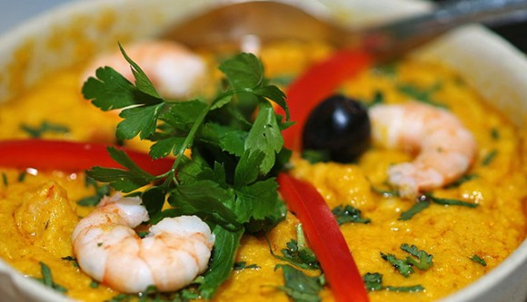
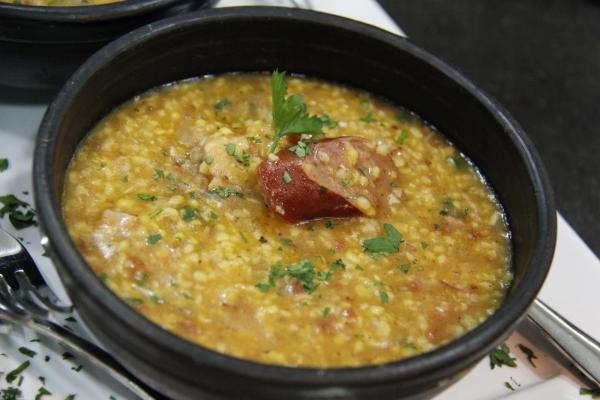

Hola bienvenidos al menu de platillos de Brasil.
Platillo |
Imagen |
Informacion |
| 1-Maniçoba. |
.jpg) |
Plato de origen indígena típico de la región norte. A simple vista parece feijoada, pero es diferente. Sus ingredientes principales son la maníva (masa hecha con las hojas cocidas de la mandioca), carne de cerdo (lomo, oreja, rabo, panceta) y de ternera, queso. Se sirve acompañada de arroz. Es una de las recetas más comunes de ciudades como Belem en el estado de Pará y es imprescindible durante las fiestas populares de la región.
|
|  |
Salsa tradicional del estado de Bahía. Famosa por ser el acompañamiento básico del conocido e imprescindible acarajé (una masa tipo ‘salgadinho’ rellena). También se puede tomar sola. Se hace con cebolla, pan mojado en agua o caldo de pollo, cacahuetes, castanhas de caju, aceite de dende, gambas pequeñitas (camarones), leche de coco y tomate entre otros condimentos como la pimienta. Debe quedar espeso y se puede acompañar con arroz. El origen de este plato es africano.
|
|
|
3-Quirera
|
 | La quirera realmente es un ingrediente también conocido como canjiquinha y que está presente en muchos platos del estado de Minas Gerais e incluso del sur de Brasil. Su textura es parecida a la de la quinoa. La quirera lapeana es la versión más famosa de este plato que, entre otros ingredientes, lleva cebolla y carne. Se llama así porque es típica de la ciudad de Lapa en el estado de Paraná. El resultado es similar a una sopa espesa. |